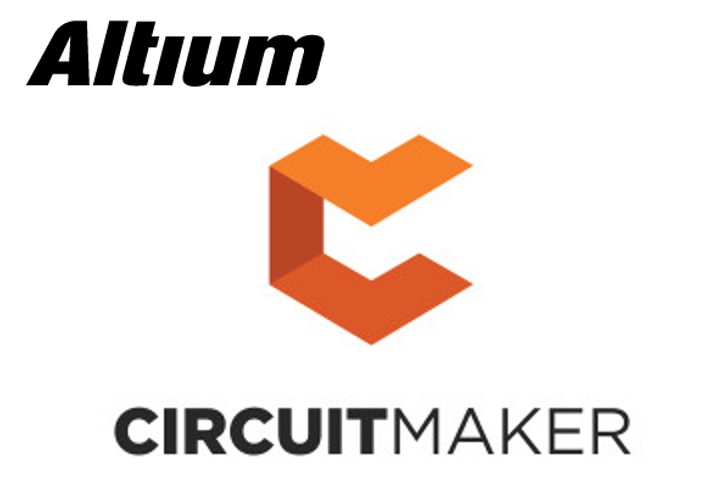
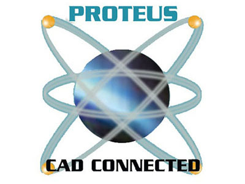
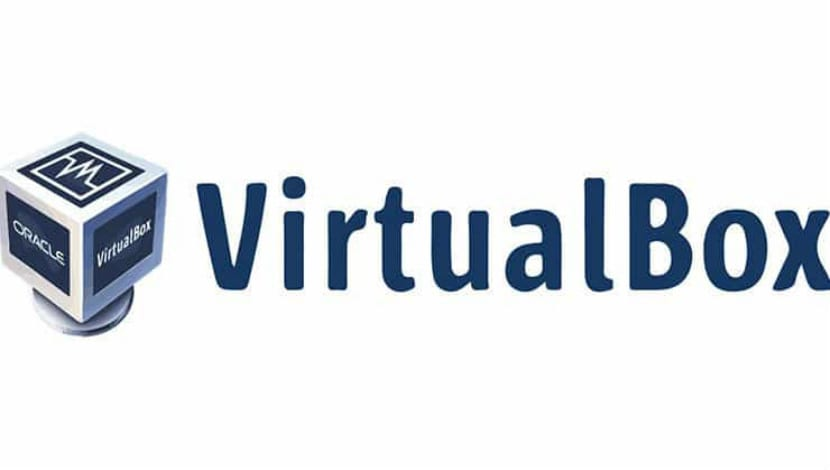
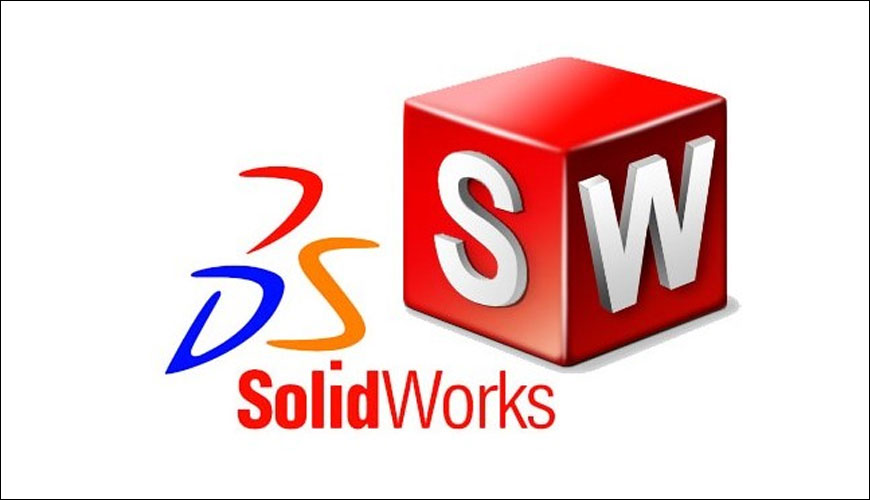

|
Cisco Packet Tracer es un software que les permite a los usuarios crear topologías de red, configurar dispositivos, insertar paquetes y simular una red con múltiples representaciones visuales. Cisco Packet Tracer es una herramienta que permite comprobar el funcionamiento de una red informática. Asimismo, permite el diseño y puesta en marcha de cualquier topografía de red, y es capaz de manejar decenas de equipos routers, switches, hubs y servidores Cisco. . |
|  |
Circuit-Maker es un software de simulación de circuitos electrónicos, este nos facilita el diseño de circuitos tantos digitales como analógicos. CircuitMaker contiene todas las herramientas necesarias para la creación y la simulación rápidas y fáciles de diseños electrónicos dentro de un solo producto. Este software permite una rápida y fácil captura, modelar y hacer prototipos de sus diseños con la integración de entrada esquemática, simulación de mezcla de señal y diseño PCB, edición y auto ruteo. |
|  |
Proteus se compone de 4 módulos: ISIS: es el encargado de realizar el modelo esquemático del circuito, para ello cuenta con una librería de más de 6,000 dispositivos tanto analógicos como digitales. ARES: se encarga de hacer la placa de circuito impreso (PCB) además de que puede posicionar automáticamente los componentes y hacer las pistas. Prospice: tal vez el componente más importante, pues se encarga de simular el comportamiento del circuito. VSM: permite simular el comportamiento de un micro-controlador de las familias PIC, AVR, y otras, sólo le cargas el archivo HEX y Proteus lo simula, además puede interactuar con diferentes periféricos. |
|  |
Virtual Box es un software de virtualización para arquitecturas x86/x64. Este software permite instalar sistemas operativos adicionales, conocidos como sistemas invitados, dentro de otro sistema operativo anfitrión, cada uno con su entorno independiente. Cada invitado se puede configurar, iniciar, pausar o parar de forma independiente. El SO anfitrión y los SSOO invitados pueden comunicarse entre sí a través de una serie de mecanismos, entre ellos un portapapeles común, carpetas compartidas, arrastrando y soltando ficheros, entre otros. |

|
Mikrotik RouterOS es un software que funciona como un Sistema Operativo, la empresa que lo desarrolla es Mikrotik. Al instalarlo en una PC esta se convierte en un router, lo que permite funciones como firewall, VPN Server y Cliente, Gestor de ancho de banda, QoS, punto de acceso inalámbrico y otras características comúnmente utilizado para el enrutamiento y la conexión de redes. La ventaja fundamental que ofrece Mikrotik es que va a funcionar exactamente igual que un router propietario, pero a un coste significativamente inferior. Además, es un software que ofrece gran flexibilidad para su configuración, con amplias posibilidades de actualización. |
|
AirMax es un revolucionario protocolo propietario de acceso al medio y priorización desarrollado por Ubiquiti con el cual se eliminan las desventajas tradicionales asociadas a sistemas basados en tecnología 802.11. El protocolo 802.11 (a/b/g/n) utiliza la técnica de detección de portadora ya que fue diseñado para ambientes en interiores donde todos los clientes pueden escucharse entre ellos. El protocolo Airmax (basado en TDMA) fue diseñado específicamente para aplicaciones en exteriores donde los clientes solo “ven” al punto de acceso. En otras palabras, el acceso al medio es controlado por el AP. El protocolo AirMax cuenta con “poleo inteligente” el cuál descubre los paquetes de voz y video para darles una mayor prioridad en la red. Adicionalmente ofrece “preferencia” a los clientes activos sobre los que están inactivos, lo que se traduce en una mejor latencia percibida dentro de redes grandes. El protocolo AirMax está basado en la nueva tecnología de radios MIMO 1×1 y 2×2, que ofrece tasas de transferencia TCP/IP reales de 150+Mbps en configuración punto a punto y hasta 100+ Mbps en aplicación punto a multipunto. AirMax tiene un programador inteligente TDMA VOIP/VideoQoS. Este algoritmo detecta automáticamente paquetes VOIP y Video y les da prioridad. Esto se hace automáticamente para ofrecer un mejor servicio de VOIP y servicios de video sobre el AP de AirMax. Airmax permite tener alto rendimiento en redes inalámbricas. |
 |
AirLink, es una aplicación web de Ubiquiti Netwoks, para ayudarnos a calcular la cobertura de red inalámbrica Wifi. Podemos utilizarlo para enlaces punto a punto (PtP) o punto a multipunto (PtMP), simulado con la gama de equipos AirMAX de Ubiquiti. Con AirLink obtendremos información de: Distancia del enlace inalámbrico, Zona Fresnel y obstáculos, Perfil del terreno, Intensidad de señal, Altura necesaria de torres, Rendimiento de cada equipo seleccionado y Zona de cobertura para enlaces PtMP. |
 |
Microsoft Visio es un software para dibujar una variedad de diagramas. Entre ellos se incluyen diagramas de flujo, organigramas, planos de construcción, planos de planta, diagramas de flujo de datos, diagramas de flujo de procesos, modelado de procesos de negocios, diagramas de carriles, mapas 3D y mucho más. Microsoft Visio es un software que funciona con el sistema operativo de Windows, y que fue ideado específicamente para crear todo tipo de gráficos y diagramas. Microsoft Visio Incluye también la opción de crear diagramas UML y a partir de bases de datos. |
|  |
SolidWorks es un software de diseño CAD 3D (diseño asistido por computadora) para modelar piezas y ensamblajes en 3D y planos en 2D. El software que ofrece un abanico de soluciones para cubrir los aspectos implicados en el proceso de desarrollo del producto. Sus productos ofrecen la posibilidad de crear, diseñar, simular, fabricar, publicar y gestionar los datos del proceso de diseño. Todas estas soluciones funcionan juntas para permitir a las organizaciones diseñar productos mejores, de forma más rápida y de manera más rentable. |
 |
El paquete estadístico SPSS (Statistical Package for the Social Sciences) es una herramienta desarrollada por IBM para realizar análisis estadístico de datos. SPSS es un conjunto de instrucciones de sintaxis, o "lenguaje SPSS", para la ejecución de un determinado procedimiento, transformación de datos o una fórmula estadística. El SPSS es conocido por su capacidad de gestionar grandes volúmenes de datos y es capaz de llevar a cabo análisis de texto entre otros formatos más. La base del software estadístico SPSS incluye estadísticas descriptivas como la tabulación y frecuencias de cruce, estadísticas de dos variables, además pruebas T, ANOVA y de correlación. Con SPSS es posible realizar recopilación de datos, crear estadísticas, análisis de decisiones de gestión y mucho más. |